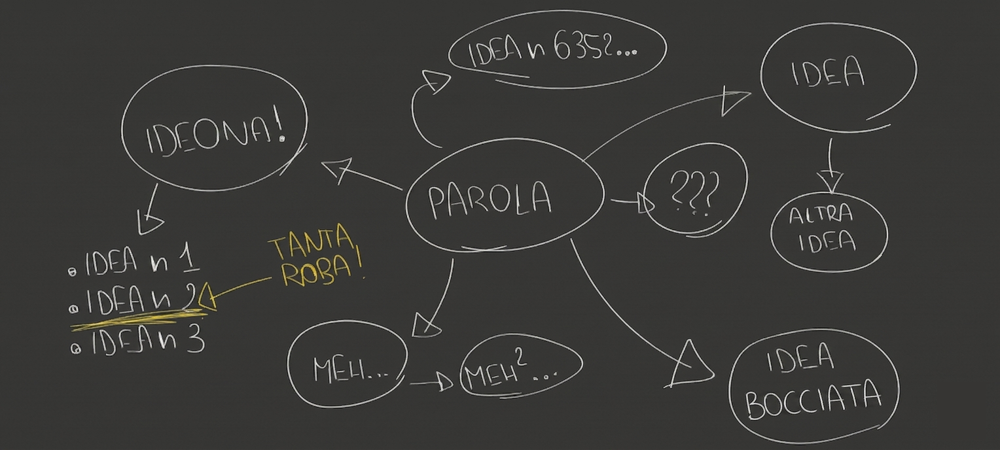

Tutor aziendale: Andrea Deangelis
Tutor scolastici: Prof. Simone Austeri e Prof. Federico Cini
In questo terzo stage, l'obiettivo si è spostato dalla tecnica alla strategia imprenditoriale: ideare un progetto basato sull'IA che risolvesse un problema reale, con la prospettiva di lanciare una startup.
Dopo una lunga fase di ricerca e brainstorming per trovare un'idea utile e fattibile, ci siamo scontrati con la realtà di un mercato dell'IA saturo e dominato da grandi multinazionali.

Valutata la forza della concorrenza e le nostre risorse limitate, abbiamo ritenuto il rischio troppo elevato per competere nel mercato, decidendo di non avviare la startup per mancanza di basi solide.
An overview of the entrepreneurial skills and market analysis faced during the stage.
Even though the project did not turn into a real business, the planning phase required a high level of critical thinking and market evaluation. I had the chance to develop skills that go beyond simple coding:
Questa esperienza mi ha insegnato ad affrontare le sfide reali del mercato, offrendomi una visione professionale che va oltre la teoria scolastica. Grazie all'impegno dimostrato, al termine degli studi inizierò ufficialmente la mia carriera come programmatore in azienda.